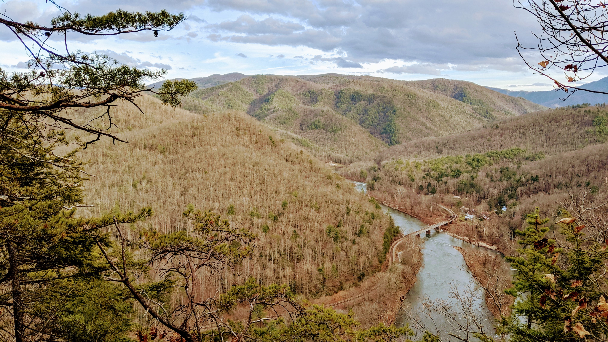
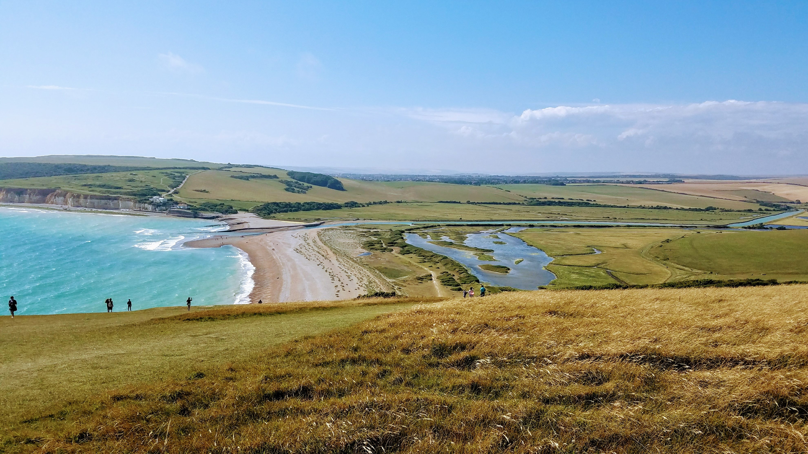
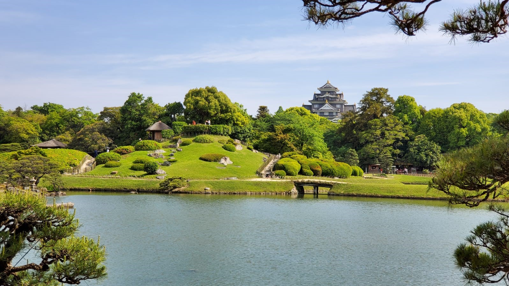

Hometown: Knoxville, Tennessee
Born and raised in the Great Smokey Mountains, I have always had a great appreciation for the outdoors and wildlife. Although people often believe Tennessee to be backwoods and dirt roads, I grew up in the state's 3rd largest city with a population of 187,500. I would describe Knoxville as suburbia with a pinch of the city life.
|

Favorite Place: London, United Kingdom
My favorite city is London in the United Kingdom. I was able to study abroad my junior year of college with my university's Engineering in London program where you study Thermodynamics and Circuits. While abroad, my family came to visit, and we hiked the Seven Sisters Cliffs along the southern coast of the UK. The picture you see above is from one of the cliff's peaks.
|

Recent Traveling: Japan
Most recently, after my graduation from the University of Tennessee, my family and I traveled to Japan. Thanks to my mother's detailed planning, we were able to spend time in Okayama, Hakone and Tokyo and visited the cities Hiroshima, Kyoto, Himeji and Kurashiki in a week's time. My family is originally from Okayama, which is where the picture you see above was taken.
|